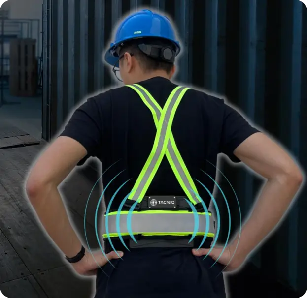
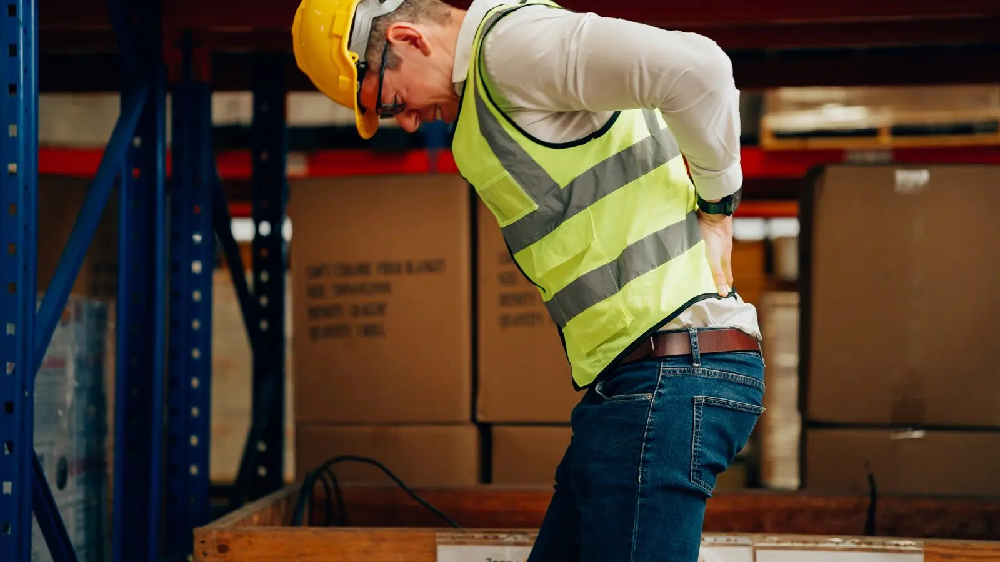
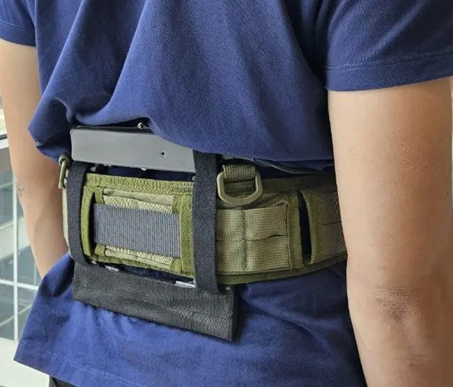

Real-time haptic feedback
Detects selected high-risk bends and twists in around 2 ms, then gives the worker a vibration cue. The product deck reports 98% detection accuracy.
Backy gives workers a timely cue when movement becomes risky, and gives safety teams a clearer view of where strain builds up across the workday.

Reported deployment baseline from the Backy introduction. This site is not connected to a live device-usage feed.

Repeated bending, lifting and twisting can add up before a worker reports pain. Backy helps teams see those movement patterns while there is still time to improve the task.
People living with low back pain, projected from 2020 to 2050.
Of reported work-related MSDs in Singapore were back injuries, according to the product brief.
Sources cited in the TacnIQ.ai introduction: WHO; Chen, Fong & Wong, Scandinavian Journal of Work, Environment & Health (2023); Singapore MOM (2025).

Backy combines a wearable pressure-sensing device, haptic feedback and a dashboard that helps teams turn movement signals into practical safety changes.
Detects selected high-risk bends and twists in around 2 ms, then gives the worker a vibration cue. The product deck reports 98% detection accuracy.
Classifies forward bends, backward bends and twisting movements, with 90%+ accuracy reported in the product deck.
Separates walking, idling and micro-breaks from sustained strain patterns.
Review a 1–10 Back Stress Score, daily trends and risk hotspots by task, station and hour.
Backy gives safety and operations teams a repeatable way to spot exposure, try a control and compare movement patterns afterwards.
Backy records posture signals through the shift.
A haptic cue helps the worker self-correct.
Review risk patterns by task and time.
Test a change to layout, task or workflow.
Check whether exposure changed after the control. The pilot target is at least 20% less high-risk exposure within 30 days.
Movement data can help teams discuss the task and its setup, not only the individual movement.
Selected results from TacnIQ.ai pilot deployments. Client names are anonymised.
fewer high-risk postures
From 9.8 to 3.3 high-risk postures per day within one week.less time in high-risk posture
Housekeeping, stewarding, banquet and bell staff.less time in high-risk posture
Validated across diverse hospital workflows.Results are from TacnIQ.ai pilot deployments. Outcomes vary by task, baseline and rollout conditions.
Backy connects worker feedback to practical action for safety, operations and reporting teams.
Workers earn points against their own baseline. Individual scores stay private; team views show shared progress.
Backy is designed for teams with repeated manual-handling tasks. It has been deployed in logistics, healthcare and hospitality.

Watch the Backy demonstration, then explore the hardware, software and technical specifications.
Explore product & specs ↗Choose one team and one manual-handling task. Establish a baseline, introduce real-time feedback, then review the movement patterns and worker experience.
Plan a pilot ↗Pilot kit: five Backy units, charging dock and gateway phone. No IT setup. Posture data only; devices are logged by serial number, not worker name.
Choose five workers in a role that lifts, carries or bends.
Brief wearers and prepare the charging and data station.
Run silent mode and collect worker feedback.
Enable vibration cues and review the dashboard.
Share an ISO-aligned report and rollout plan.
Tell us about your team, its manual-handling tasks and the safety question you want to answer.